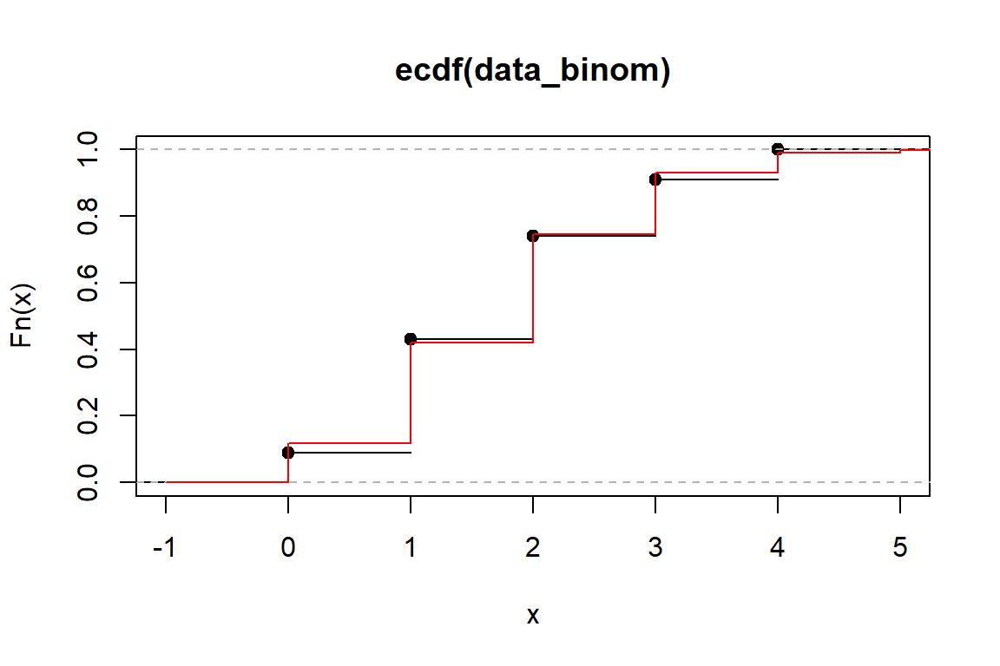
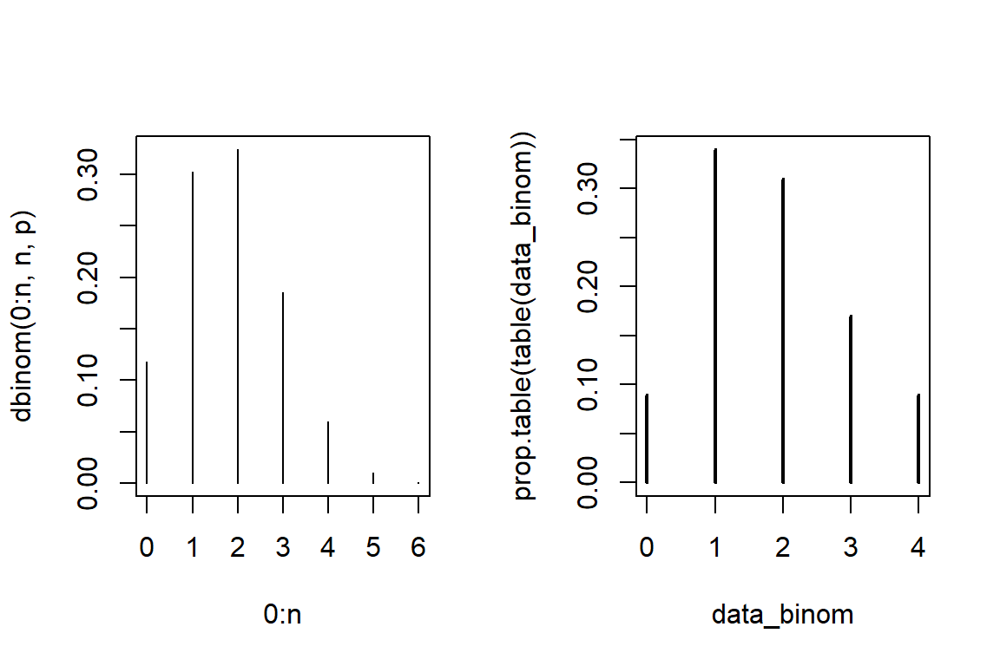
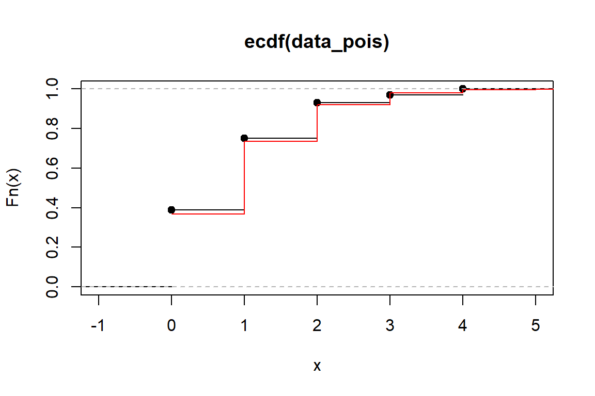
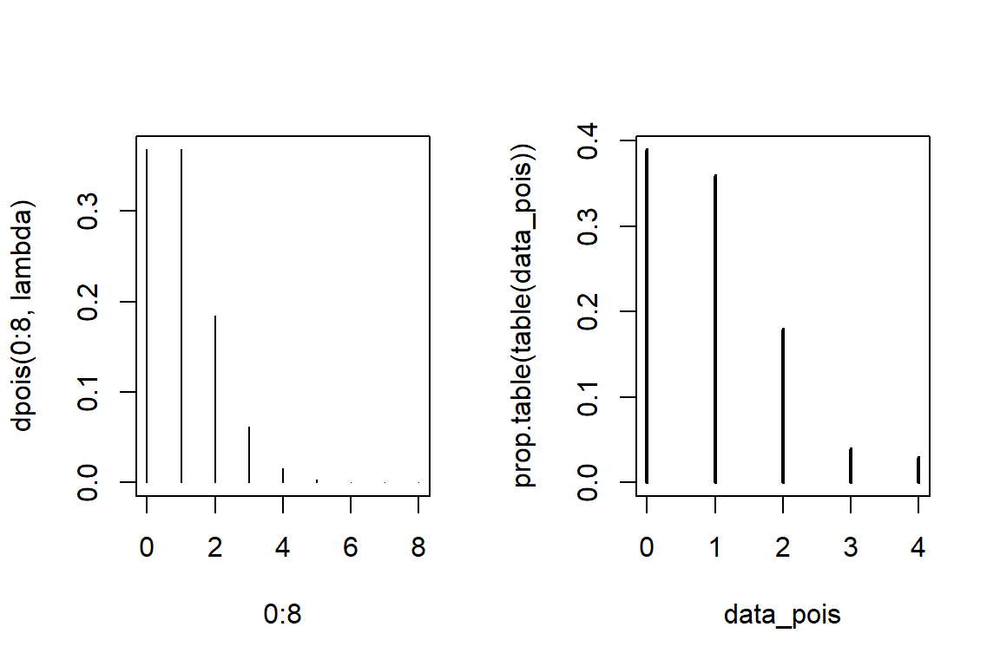
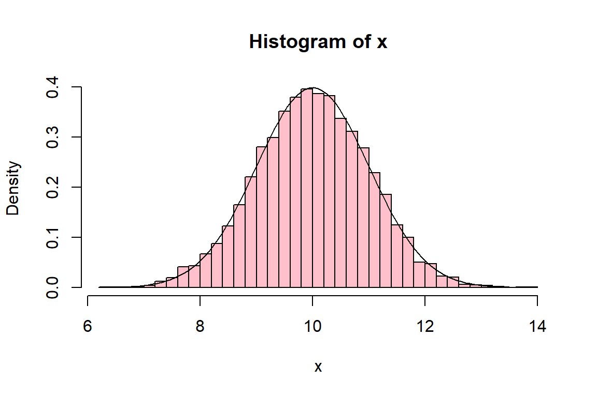

7 Working with probability distributions in R
In this Section you’ll learn how to work with probability distributions in R. Before you start, it is important to know that for many standard distributions R has 4 crucial functions:
- Density: e.g.
dexp,dgamma,dlnorm - Quantile: e.g.
qexp,qgamma,qlnorm - Cdf: e.g.
pexp,pgamma,plnorm - Simulation: e.g.
rexp,rgamma,rlnorm
The parameters of the distribution are then specified in the arguments of these functions. Below are some examples from Katrien’s course on Loss Models at KU Leuven.
7.1 Discrete distributions
7.1.1 The binomial distribution
nSim <- 100
p <- 0.3
n <- 6
# generate 'nSim' obs. from Bin(n,p) distribution
data_binom <- rbinom(nSim, n, p)
# calculate mean and variance
mean(data_binom) # empirical mean[1] 1.83[1] 1.2132[1] 1.8[1] 1.26# visualize
range <- seq(-1,n,1/1000)
plot(ecdf(data_binom)) # ecdf
lines(range,pbinom(range, n, p), col = 'red') # cdf
par(mfrow=c(1,2))
plot(0:n, dbinom(0:n, n, p), type = 'h') # pdf
plot(prop.table(table(data_binom)))
7.1.2 The Poisson distribution
nSim <- 100
lambda <- 1
# generate 'nSim' observations from Poisson(\lambda) distribution
data_pois <- rpois(nSim, lambda)
# calculate mean and variance
mean(data_pois) # empirical mean[1] 0.96[1] 1.0085[1] 1[1] 1# visualize
range <- seq(0,8, 1/1000)
plot(ecdf(data_pois)) # ecdf
lines(range,ppois(range, lambda), col = 'red') # cdf
par(mfrow=c(1,2))
plot(0:8, dpois(0:8, lambda), type = 'h') # pdf
plot(prop.table(table(data_pois)))
7.2 Continuous distributions
7.2.1 The normal distribution
[1] 0.5[1] 0.5[1] 1.6449[1] -1.9600 -1.6449 0.0000 1.6449 1.9600# generate observations from N(0,1)
x <- rnorm(10000, mean=10, sd=1)
# visualize
hist(x, probability=TRUE, nclass=55, col="pink")
curve(dnorm(x, mean=10, sd=1), xlim=range(x), col="black",add=TRUE)
7.2.2 The gamma distribution
# check parametrization of gamma density in R
? dgamma
# grid of points to evaluate the gamma density
x <- seq(from = 0, to = 20, by = 0.001)
# choose a color palette
colors <- c("#000000", "#E69F00", "#56B4E9", "#009E73", "#F0E442", "#0072B2", "#D55E00", "#CC79A7")
# shape and rate parameter combinations shown in the plot
shape <- c(1, 2, 3)
rate <- c(0.5, 0.5, 0.5)
plot(x, dgamma(x, shape = shape[1], rate = rate[1]), type='l', xlab ='x', ylab='Gamma density', main='Effect of the shape parameter on the Gamma density')
for(i in 2:length(shape)){
lines(x, dgamma(x, shape = shape[i], rate = rate[i]), col=colors[i])
}
# add a legend
legend("topright", paste("shape = ", shape, ", rate = ", rate, sep=""), col = colors, lty=1)
7.3 Exercises
Learning check
- Generating random numbers, tossing coins.
- Set your seed to 1 and generate 10 random numbers (between 0 and 1) using
runifand save these numbers in an object calledrandom_numbers. - Using the function
ifelseand the objectrandom_numberssimulate coin tosses. Hint: ifrandom_numbersis bigger than 0.5 then the result is head, otherwise it is tail. - Another way of generating random coin tosses is by using the
rbinomfunction. Set the seed again to 1 and simulate with this function 10 coin tosses.
- Simulate samples from a normal distribution. Imagine a population in which the average height is 1.7m with a standard deviation of 0.1.
- Using
rnormsimulate the height of 100 people and save it in an object calledheights. - To get an idea of the values in
heightsapply the functionsummaryto it. - What is the probability that a person will be smaller or equal to 1.9m? Use
prnorm. - What is the probability that a person will be taller or equal to 1.6m? Use
pnorm.
- The waiting time (in minutes) at a doctor’s clinic follows an exponential distribution with a rate parameter of 1/50.
- Use the function
rexpto simulate the waiting time of 30 people at the doctor’s office. - What is the probability that a person will wait less than 10 minutes? Use
pexp. - What is the waiting time average?